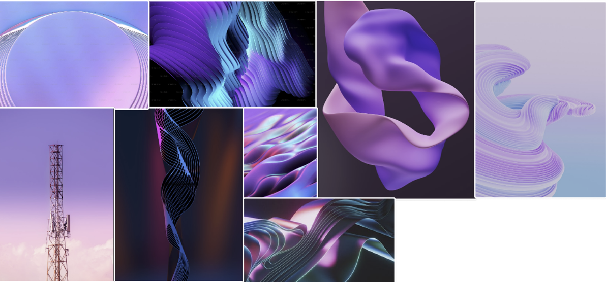
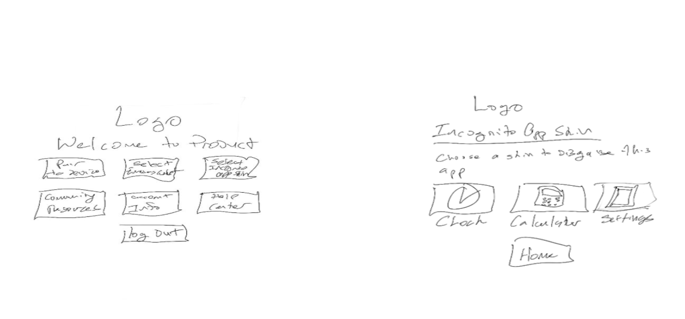
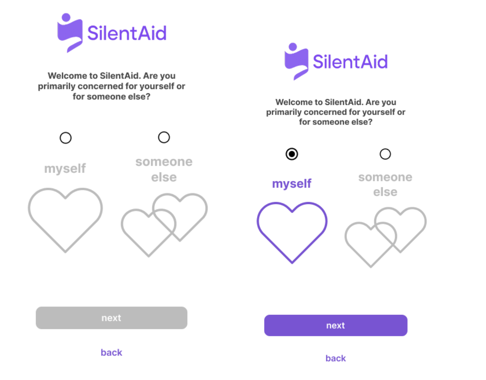
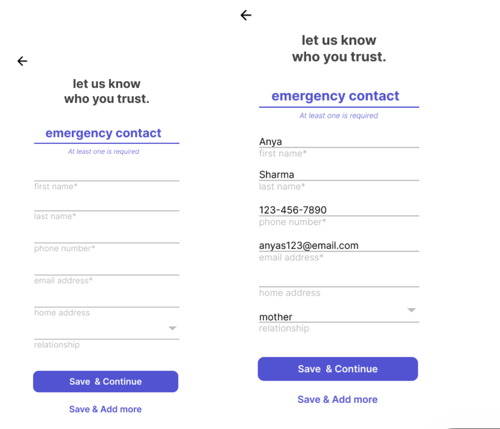
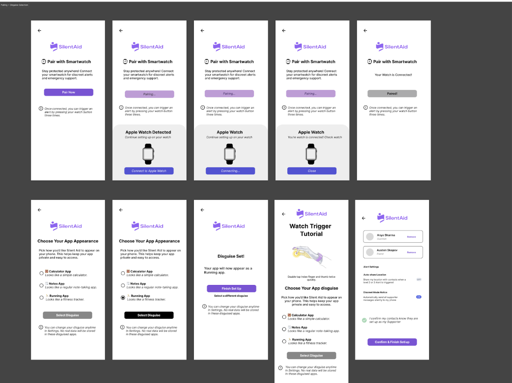
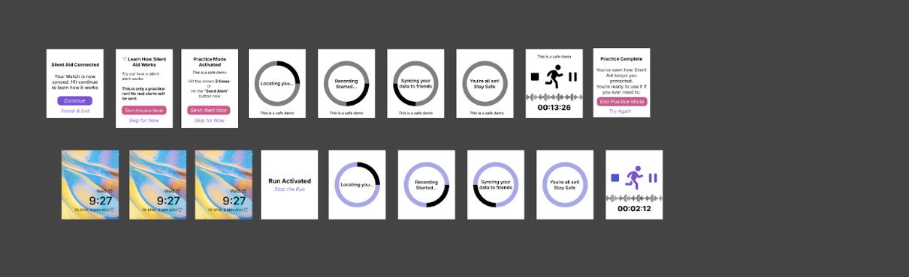
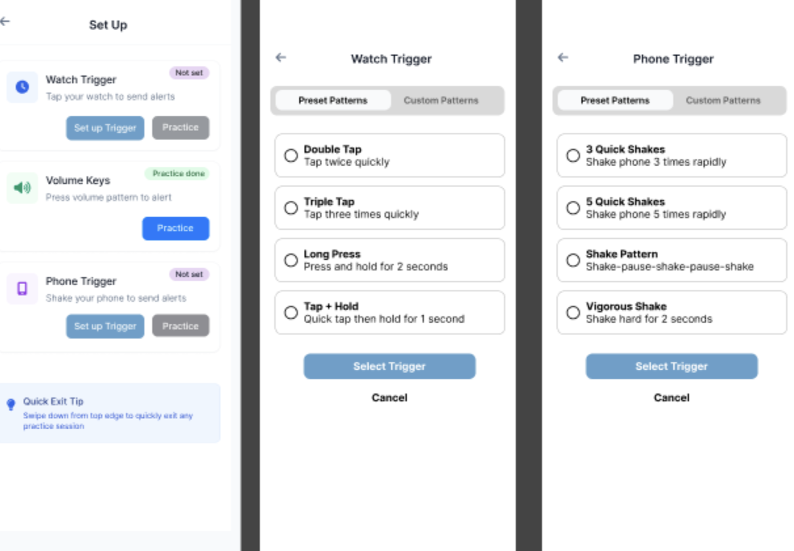
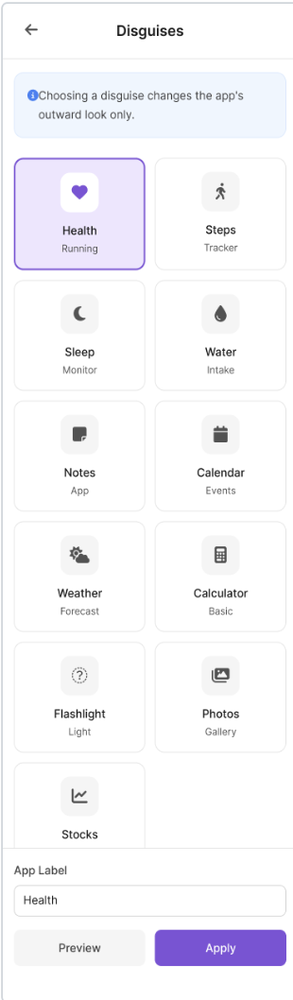
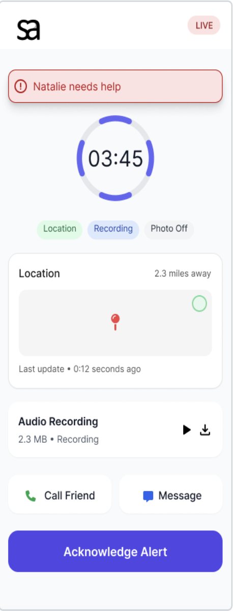
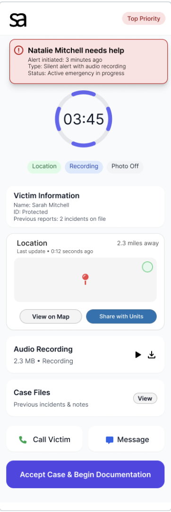

SilentAid
Designing a discreet safety system to help people silently request help during domestic violence situations.
SilentAid is a phone + smartwatch concept that lets users trigger a hidden alert when it is not safe to speak or openly use their device. This project was completed as part of DePaul's HCI 430 course and focuses on research, prototyping, and iterative design rather than production code.
The Problem
Many people living with domestic violence cannot safely use typical emergency tools. Unlocking a phone, speaking aloud, or opening an obvious safety app can draw attention and increase risk.
Existing apps often:
- are easy to spot on a device,
- require multiple steps under stress,
- lack smartwatch support, and
- do not account for device monitoring by an abuser.
SilentAid is meant to give users a quieter option: a disguised app with simple, memorable triggers that can be used on a phone or watch, even when someone is watching.
Users & Research Insights
Our research started with a review of existing safety apps and common device-control behaviours in domestic violence situations. From there, we developed personas and scenarios to ground our design decisions.
Personas
- Survivor: Needs a discreet way to get help without being detected.
- Trusted Contact: Receives alerts and decides how to respond.
- Responder: A police officer or social worker who needs clear, actionable information.
- Supportive Partner / Friend: Helps with safe setup and practice when appropriate.
Key Insights
- Alert triggers must be simple enough to use under stress.
- The app should be easily disguised as something ordinary.
- Watch-based activation provides a useful backup when the phone is not reachable.
- Helpers need quick access to location and level of urgency, not long explanations.
- Setup has to be as straightforward as possible to avoid mistakes.


Design Goals
Safety
- Allow silent, discreet activation.
- Minimise visible signs that the app is a safety tool.
- Avoid interactions that require speaking or complex navigation.
Usability
- Keep setup short and clear.
- Use triggers that can be practised and remembered.
- Provide enough feedback to show an alert was sent, without being obvious.
System
- Support phone + smartwatch as a pair.
- Offer different views for survivors, trusted contacts, and responders.
- Allow room to expand to more triggers or notification styles later.
Prototyping Process
We started with rough sketches and only increased fidelity as we gained confidence in the core concept.
1. Lo-Fi Sketches
We sketched possible disguises, trigger ideas, and flows for:
- First-time setup
- Adding emergency contacts
- Watch pairing and practice
- What each user type sees when an alert is triggered

2. Mid-Fidelity Prototype (Figma)
- Onboarding and app disguise selection
- Emergency-contact setup
- Watch pairing steps
- Practice flows for the activation gesture
- Basic views for friends and responders




Usability Testing
We tested the mid-fi prototype with five participants using a mix of Zoom-based sessions and in-person testing. I wrote the testing protocol and helped moderate and analyse sessions.
Tasks
- Install and set up SilentAid for the first time.
- Select a disguise for the app.
- Pair the smartwatch to the app.
- Learn and practise the activation gesture.
- Interpret what happens on the "helper" side when an alert is sent.
Key Findings
- Several participants were unsure how watch activation worked based on the mid-fi screens.
- The practice screens for the the trigger gesture needed clearer guidance.
- Users wanted more disguise options to better match the kinds of apps they usually have.
- The emergency-contact setup flow was generally easy to complete.
- Multiple participants said the concept felt realistic and "could save lives."
Maze was used for some of the online tasks, but we ran into issues with stability on mobile devices. If we continued this project, we would test future prototypes on multiple devices before relying on that platform again.
Hi-Fidelity Design
We used the results of testing to refine our design in a hi-fi Figma prototype. My contributions at this stage focused on writing, clarity, and reviewing screens for consistency.
Key Changes in the Hi-Fi Prototype
- Disguises: Expanded from a small set to eleven options, based on feedback.
- Watch Activation: Reworked instructions and flow so it is clearer how to trigger an alert and what happens next.
- Alert Views: Shortened text and made severity levels more obvious to helpers.
- Visual Style: Applied a calm visual language using soft purples, navy, and neutrals from the moodboard.




My Contributions
SilentAid was a group project, but my main contributions included:
- Wrote the usability testing protocol and task descriptions.
- Edited written work for clarity, tone, and consistency.
- Contributed to mid-fi and hi-fi Figma screens (especially text and flow descriptions).
- Helped moderate and observe testing sessions (Zoom and in person).
- Analysed participant feedback and summarised key findings for design changes.
- Helped manage the overall narrative of the final deliverables.
What I Learned
This project reinforced a few key lessons for me:
- Start with simple, low-fidelity prototypes to keep ideas flexible.
- Designing for high-risk situations requires careful thought about what can realistically be used under stress.
- Clear test protocols and task wording matter as much as the prototype itself in usability studies.
- Cross-device experiences (phone + watch) add complexity but also real value for certain problems.
If this project continued, I would want to do more rounds of testing, especially on the watch flows, and involve more people who work directly in domestic-violence support roles to validate our assumptions.